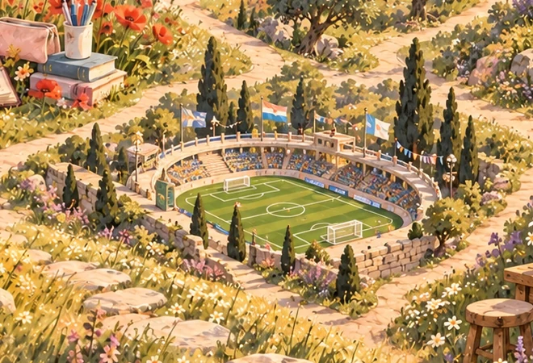
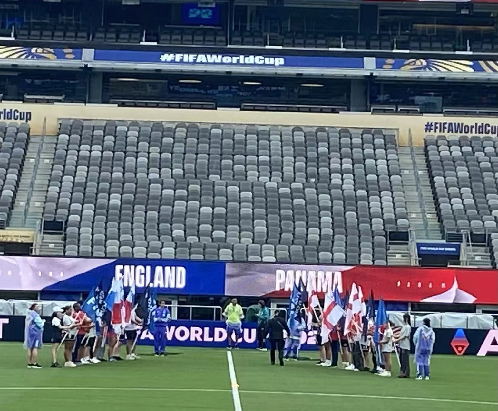
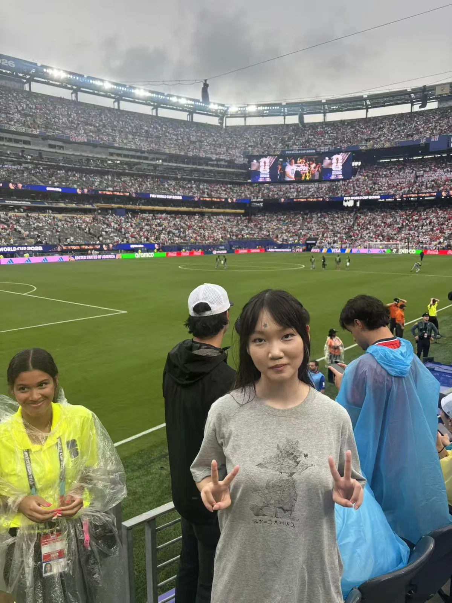
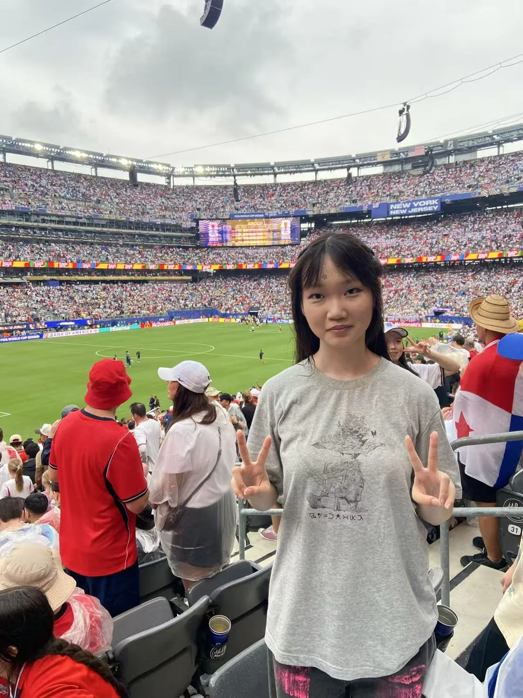

FROM THE MATERIALS
A closer look
Short diagrams adapted from the work itself.
Moments from the stadium
The flag bearer lineup, the field, and a moment in the stands.



READ THE FULL WORK

FROM THE MATERIALS
Short diagrams adapted from the work itself.
The flag bearer lineup, the field, and a moment in the stands.



READ THE FULL WORK